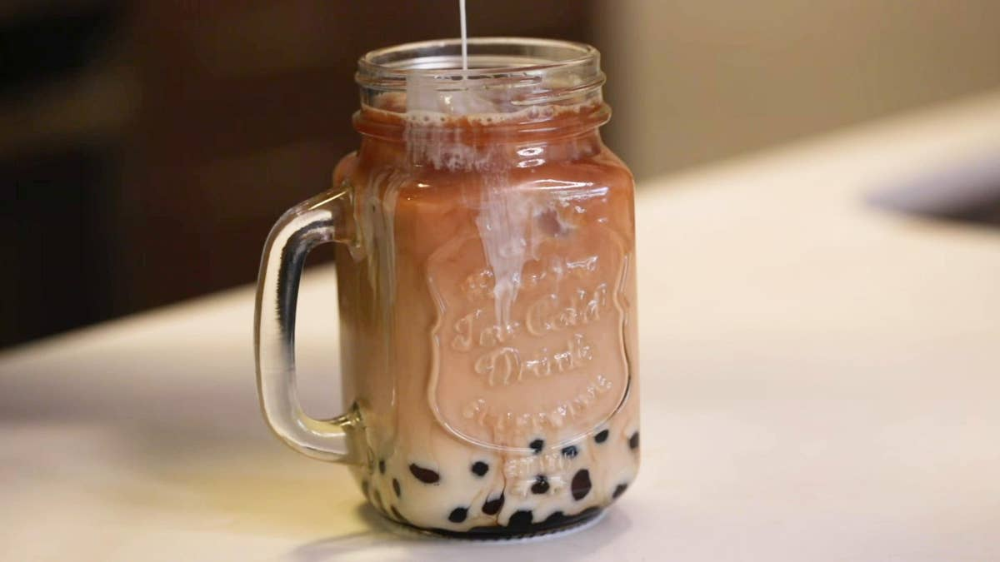

Josiah Izaak D. Lopez
Socials
Facebook
Twitter
Instagram
GitHub
Favorite Foods
Sinigang(Shrimp)
Milk Tea

Garlic Chicken
Buttered Fish Fillet
Achievements
Progress in College (76%)
76%
Progress in Capstone (5%)
5%
Progress in Wealth (1%)
1%
More About Me
Where I grew up
I am Josiah Izaak D. Lopez, born in General Santos City and grew up on Caloocan City. I have been transferring to a lot of places hence the reason why I have been enrolled to 7 total of schools already.